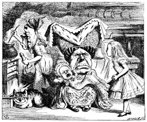

At this moment the door of the house opened, and a large plate came skimming out, straight at the Footman's head: it just grazed his nose, and broke to pieces against one of the trees behind him.
'--or next day, maybe,' the Footman continued in the same tone, exactly as if nothing had happened.
'How am I to get in?' asked Alice again, in a louder tone.
'ARE you to get in at all?' said the Footman. 'That's the first question, you know.'
It was, no doubt: only Alice did not like to be told so. 'It's really dreadful,' she muttered to herself, 'the way all the creatures argue. It's enough to drive one crazy!'
The Footman seemed to think this a good opportunity for repeating his remark, with variations. 'I shall sit here,' he said, 'on and off, for days and days.'
'But what am I to do?' said Alice.
'Anything you like,' said the Footman, and began whistling.
'Oh, there's no use in talking to him,' said Alice desperately: 'he's
perfectly idiotic!' And she opened the door and went in.
The door led right into a large kitchen, which was full of smoke from one end to the other: the Duchess was sitting on a three-legged stool in the middle, nursing a baby; the cook was leaning over the fire, stirring a large cauldron which seemed to be full of soup.
'There's certainly too much pepper in that soup!' Alice said to herself, as well as she could for sneezing.
There was certainly too much of it in the air. Even the Duchess sneezed occasionally; and as for the baby, it was sneezing and howling alternately without a moment's pause. The only things in the kitchen that did not sneeze, were the cook, and a large cat which was sitting on the hearth and grinning from ear to ear.
'Please would you tell me,' said Alice, a little timidly, for she was not quite sure whether it was good manners for her to speak first, 'why